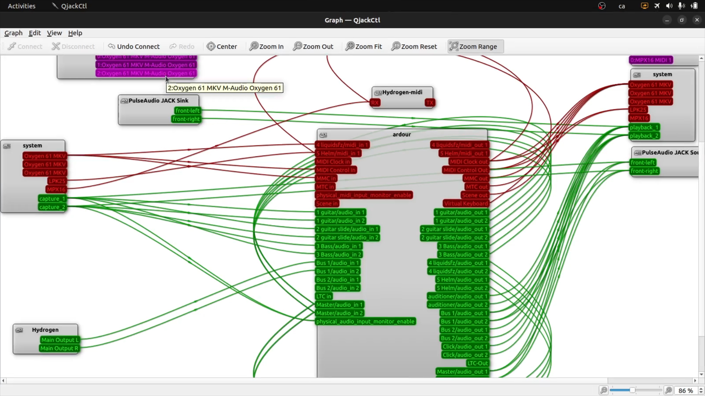
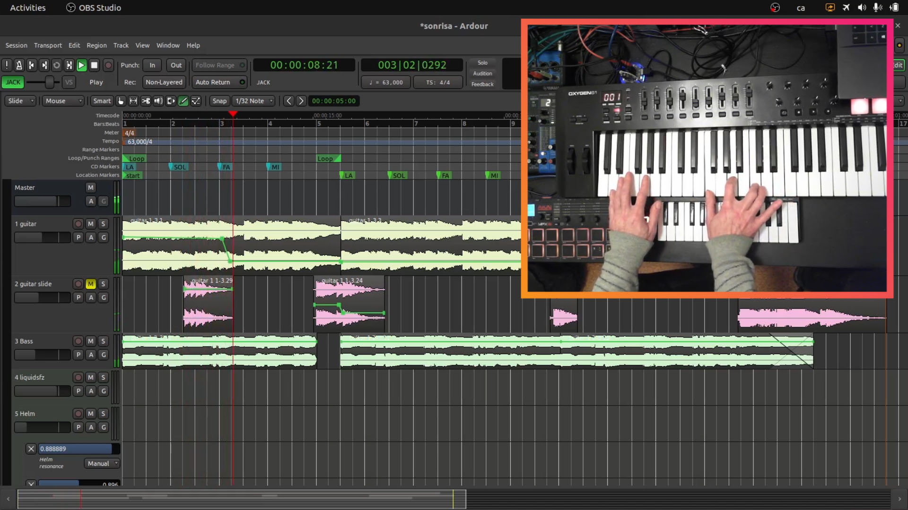
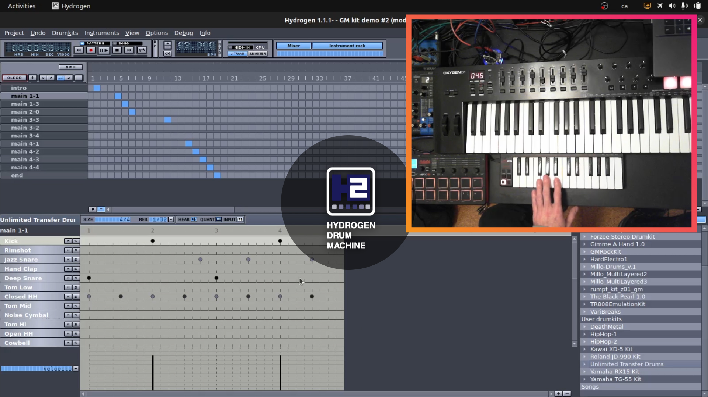
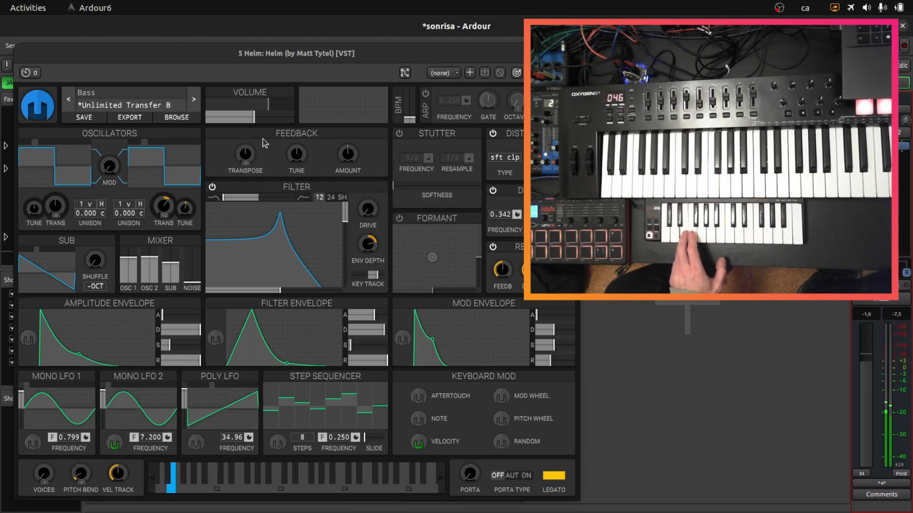

Recordeu que el programari que referenciem a continuació, també funcionen sobre els sistemes operatius privatius de Microsoft o Apple. De totes maneres recomanem el sistema operatiu Ubuntu +22 basat en Debian, doncs inclou gairebé tot aquest programari en el seus repositoris (snapcraft.io).
Les llibreries de samplers lliures que em utilitzat, ens permeten modificar-les o generar-ne de noves. De manera que les produccions poden sonar molt més originals i sense problemes amb els drets d’autor.
QjackCtl serveix per controlar el servidor d'àudio Jack, que ens proporciona un gràfic de les connexions d’àudio i MIDI disponibles. També ens permet configurar diferents paràmetres del servidor Jack; com per exemple la frecuencia de samplex, el retard...

Existeixen diversos programaris per a l’edició multi-pistes amb llicencies lliures o de codi obert: LMMS (GPL-2.0), Zrithm (GPL-3.0), Qtractor (GPL-2.0) i Ardour (GPL-2.0). Jo he triat Ardour 6 simplement perquè està inclòs en el repositori de l’Ubuntu 22 i funciona perfectament.

Sincronitzada amb l’Ardour, utilitzo la caixa de ritmes Hydrogen Drum Machine. Per engegar, rebobinar, parar, silenciar i canviar entre patrons de ritme, faig servir una interfície MIDI de 16 botons.
En algunes ocasions connecto la caixa de ritmes a la sortida MIDI d’una pista de l’Ardour. Així puc escriure tota la línia rítmica amb l’Ardour. Amb aquesta configuració no sincronitzo amb la caixa de ritmes doncs tot ho controla l’Ardour.
També connecto a una pista d’àudio de l’Ardour el programari Guitarrix. Ens proporciona efectes i emuladors de d’amplificadors per a guitarres i baixos. Jo no ho faig, però també el podem connectar a una interfície MIDI. També podem utilitzar Guitarrix com a plugin VST dins de l'Ardour en una pista d'àudio.

Sintetitzadors
Ardour permet utilitzar diferents sintetitzadors i samplers en les pistes MIDI com a pluguin VST:
Sintetitzador força utilitzat. Utilitza diferents tècniques de síntesi, amb molts filtres entre d’altres característiques. Amb una comunitat d’usuaris creant preconfiguracions.

Pot funcionar com a Plug-in en els formats LV2, VST, VST3 o AU. De manera que és compatible amb el programari d’edició d'àudio Ardour.

Sintetitzador per gnu-linux amb diferents bancs de so. El disseny de la interfície del Yoshimi no ha canviat mai. És un clàssic però es connecta perfectament al servidor d'àudio QJAckCtl i a la interfície MIDI que vulguem.
Samplers
El format de samplers SFZ és lliure de redistribuir i utilitzar en projectes comercials sfzformat.com
- Llista d’instruments sfzinstruments.github.io
- Llista de llibreries d’instruments freepats.zenvoid.org
liquidsfz és un dels programaris per poder utilitzar llibreries en format SFZ github.com/swesterfeld/liquidsfz hi han d’altres, aquí tens una llista sfzformat.com/software/players
Efectes
Tant a les pistes d'àudio com a les pistes MIDI podem incloure efectes. Calf és una col·lecció de pluguins de tota mena en format LV2. També tenim la llibreria Linux Studio Pluguins (LSP) amb un rendiment molt bo. Totes dues col·leccions estan disponibles al repositori d’aplicacions d'Ubuntu.
Els paràmetres dels efectes es poden connectar a interfícies MIDI, a traves de l’automatització que ofereix l’Ardour.
El maquinari utilitzat
En la foto pots veure el maquinari que utilitzo, no és el més recomanable, simplement és el que em quadrava amb el meu reduït pressupost:
- Teclat MIDI de 65 tecles amb diferents botons per controlar els sintetitzadors, efectes i volums de les pistes de l’Ardour.
- Teclat MIDI de 25 tecles per controlar els sintetitzadors de l’Ardour.
- Interfície MIDI de 16 tecles per controlar la caixa de ritmes Hydrogen Drum Machine sincronitzada amb l’Ardour.
- Targeta externa d'àudio a la que connecto la guitarra o el baix. La sortida d'àudio la connecto a un dels canals de la taula de mescles.
- Taula de mescles amb sortida USB connectada al PC. Per a connectar micròfons per a les veus.
- Auriculars de resposta plana. Son cars però t’evitarà molestar als veïns i poder masteritzar correctament.
- Duplicador de sortides per a connectar més auriculars, en el cas d’estar gravant amb més gent.
- PC portàtil. CPU Intel Core i5 amb 12 Gbytes de RAM
La quantitat de sintetitzadors, pistes d’àudio i efectes que pots utilitzar en una sessió en directe, estarà limitada pel rendiment del PC. En el meu cas amb un portàtil amb CPU de 4 nuclis, puc arribar a utilitzar 4 pistes MIDI amb sintetitzadors i 4 pistes d’àudio. Tot plegat amb la caixa de ritmes Hydrogen i el Audacity gravant la sortida USB de la taula de mescles.
I recorda que el maquinari i el programari que utilitzis no et faran millor músic. Això si, et proporcionaran més eines de creació i edició d’àudio.